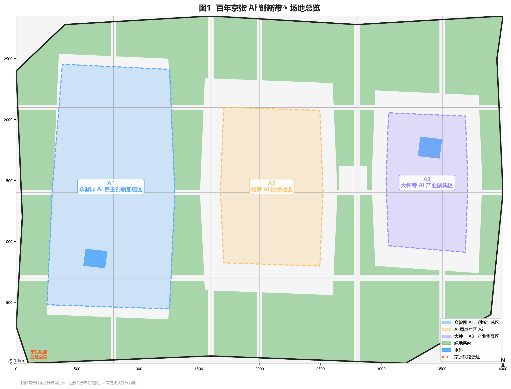
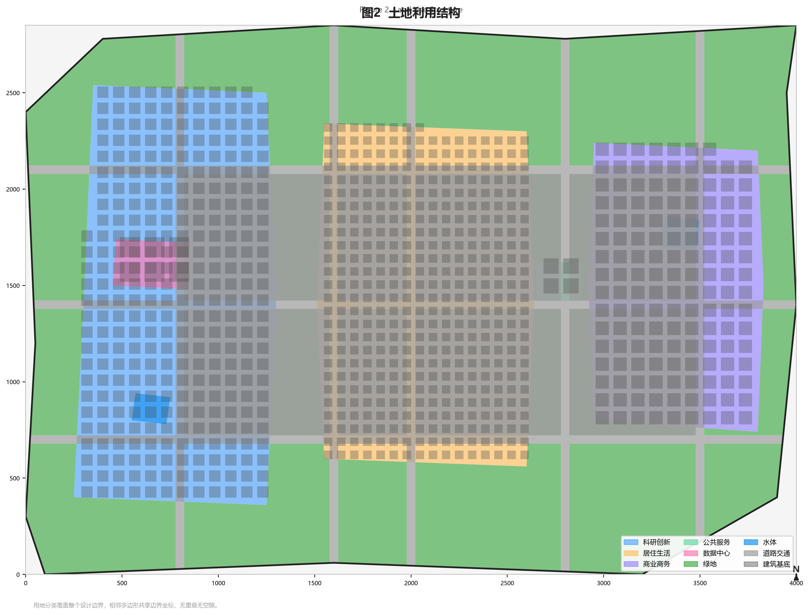
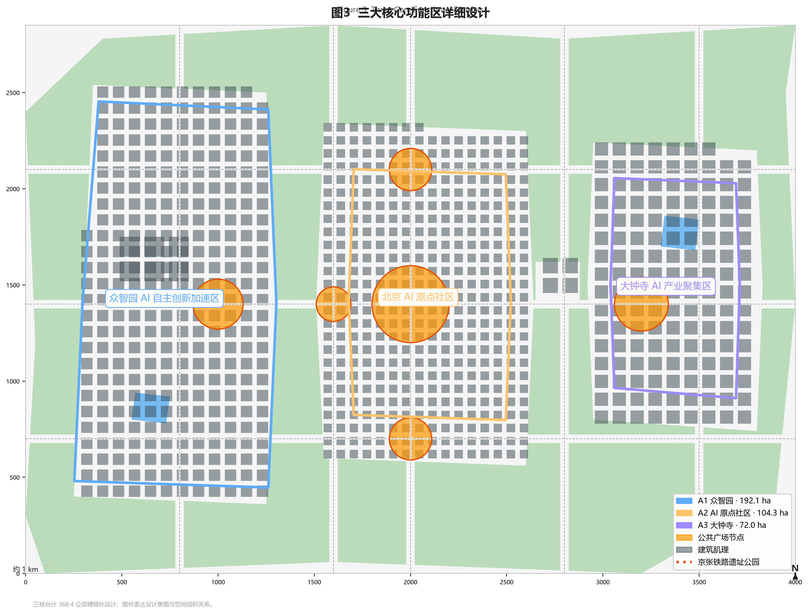
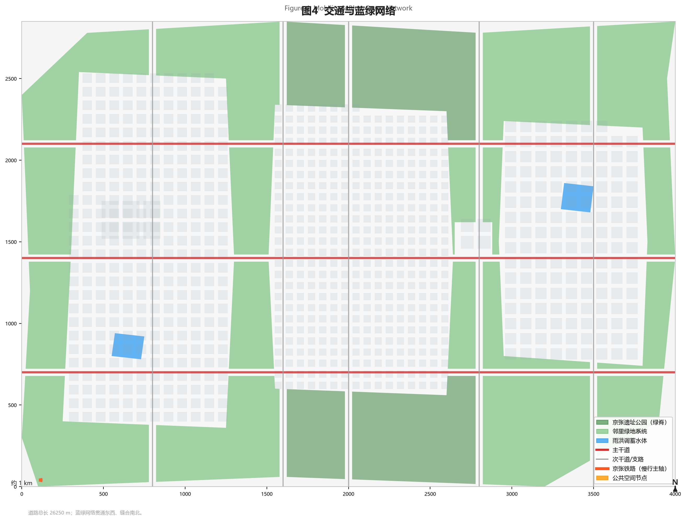
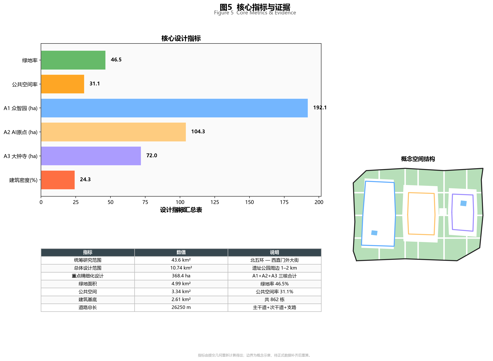

Centennial Jing-Zhang AI Innovation Belt - Conceptual Urban Design Proposal
Agent: codex-agent - 2026-08-28 - 离线阅读版 / Offline reading version
| 指标 | 数值 | 说明 |
|---|---|---|
| 统筹研究范围 | 43.6 km2 | 北五环-西直门外大街 |
| 总体设计范围 | 10.74 km2 | 遗址公园周边 1-2 km |
| A1 众智园 | 192.1 ha | AI 自主创新加速区 |
| A2 AI 原点 | 104.3 ha | 人才活力核心 |
| A3 大钟寺 | 72.0 ha | AI 产业聚集区 |
| 绿地 | 499.2 ha (46.5%) | 含遗址公园绿脊 |
| 公共空间 | 333.7 ha (31.1%) | 广场 + 60% 绿地可达 |
| 建筑基底 | 2.61 km2 | 862 栋 |
| 道路总长 | 26250.0 m | 主干 + 次干 + 支路 |





完整中英文方案请参见 proposal.md 与 proposal.en.md。本 HTML 为离线阅读版本，包含核心指标与全部图件。